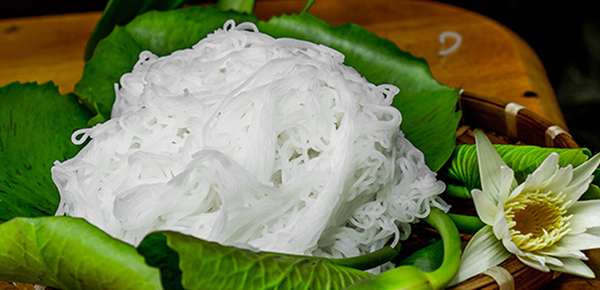
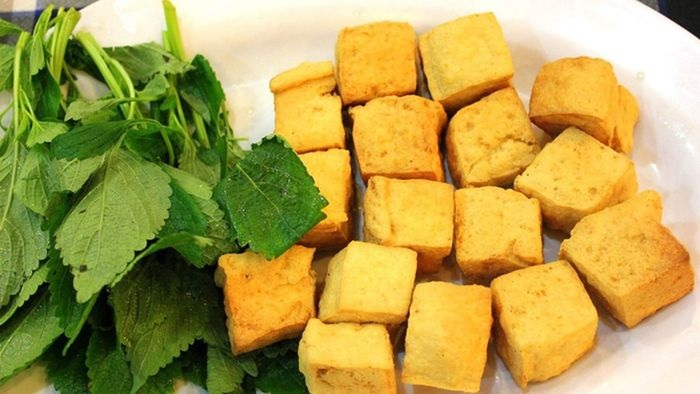
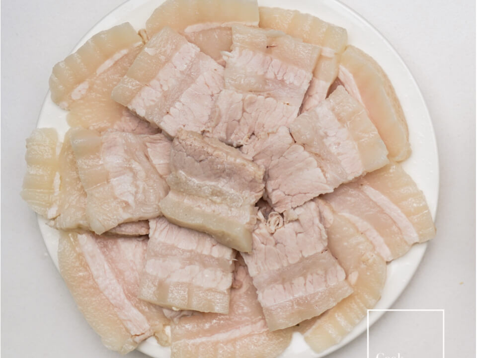
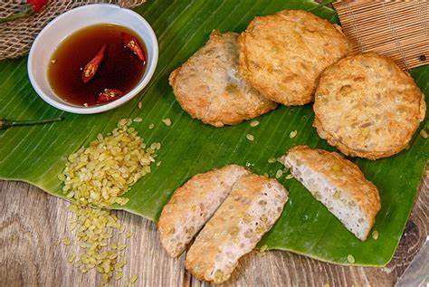
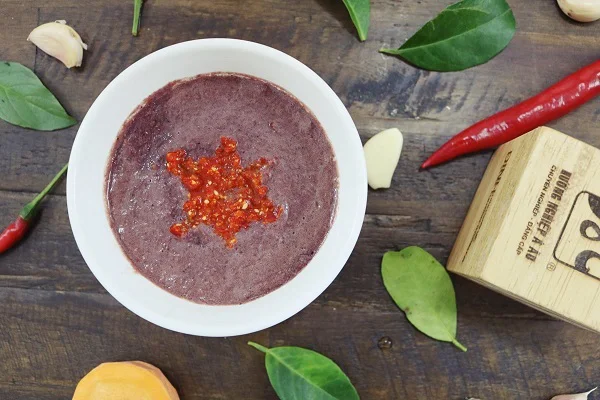
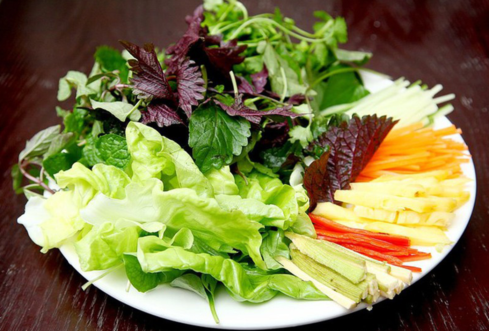

Nguyên Liệu

Bún tươi
500g

Đậu phụ
3 miếng

Thịt luộc
300g

Chả cốm
200g

Mắm tôm
100ml

Rau sống
200g
Cách Chế Biến
- Rửa sạch rau sống và để ráo.
- Luộc thịt ba chỉ và cắt thành lát mỏng.
- Rán đậu phụ vàng đều các mặt, sau đó cắt thành miếng vừa ăn.
- Chiên chả cốm cho đến khi vàng và thơm.
- Pha mắm tôm với đường, nước cốt chanh, tỏi và ớt theo khẩu vị, sau đó đánh đều cho mắm sủi bọt.
- Chia bún, đậu phụ, thịt luộc, chả cốm, rau sống ra đĩa và dùng kèm mắm tôm đã pha.